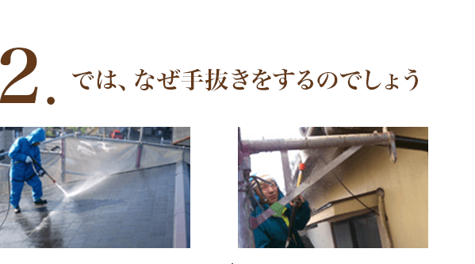
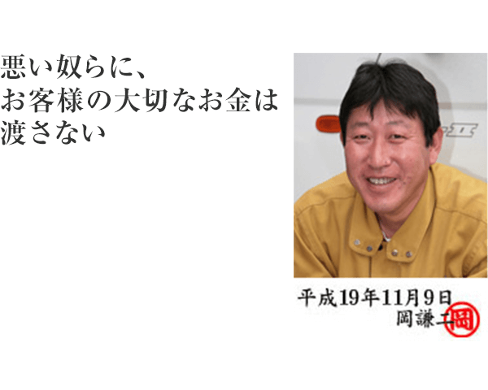

そもそも、手抜き工事というのは、塗装工事には常識のようです。
知らないのは、信用して頼んだお母さん、お父さん方かもしれません。
なぜなら、丁寧に仕事をしても、手を抜いて仕事をしても、仕上がりは見た目にはほとんど判らないのです。
時には、手を抜いて塗った方が、キレイに仕上がる場合があります。
塗料を薄めて塗ると、実は仕事がしやすいし、キレイに仕上がります。
あまり薄めないで濃い塗料で塗るとローラーやハケの動きが遅くなります。かべとローラーとの摩擦がすごいんです。その分塗料の膜の厚みは十分に確保され、家は長持ちします。その反面、塗料が濃い分、乾燥が遅く、よだれを垂らしたような跡ができる場合もありますので、注意をして作業をしなければいけません。
逆に、塗料を薄めると、ローラーやハケの滑りが良くなり、早く塗れて、意外にもキレイに仕上がるものなんです。かなり薄めても、色が薄くなるということがなく、見た目には全然判りません。おまけにローラーの動きがなめらかなので、いかにも上手な職人さんが塗っているように見えてしまうのです。しかし、3年後、パリパリと剥がれてきたら…。 逆に、塗料を薄めると、ローラーやハケの滑りが良くなり、早く塗れて、意外にもキレイに仕上がるものなんです。かなり薄めても、色が薄くなるということがなく、見た目には全然判りません。おまけにローラーの動きがなめらかなので、いかにも上手な職人さんが塗っているように見えてしまうのです。しかし、3年後、パリパリと剥がれてきたら…。
手抜きをするのは、よくばりな業者か、下儲けで作業をしている業者です。
私たちも、経験がありますが、下請けというのは手抜きをしたがります。
下請けさんは好んで手抜きをしているのかどうかは、解りませんが、私は何度も下請けさんの手抜きに泣かされてきました。
下請け業者に仕事を頼むことは本来、おかけんの方針に反するのですが、忙しくなるとどうしようもなく頼んでいました。
でも、やはり下請けさんは手抜きをしていました。
初めて下請けさん（Aさん）に頼んだ時のことでした。
40万円の工事代でお願いしたのですが、1週間で仕上げてしまいました。
通常ですと、2週間です。どんなに上手な職人でも、1週間で良い仕事をするのは不可能な物件でした。
すこし、予算がすくなかったのではと思い、次の物件では60万円の工事代でお願いしてみました。
すると、今度は、Aさんは別の下請け職人（Bさん）に40万円で仕事を流していました。そしてそのBさんは、そのまた下請け職人の（Cさん）に15万円で流していました。
私が支払った工事代の60万円が15万円にまで下がっていたのです。
職人 つまり、45万円がブローカー職人（AさんとBさん）にもっていかれてしまったのです。しかもお客様の大切なお金を。
そのことは、後になって知らされたのですが、Aさんがピンはねしたのを知って今度はBさんに仕事を依頼しました。今度はBさんとCさんでよい仕事をしてもらおうと思っていました。
ところが、現場で作業しているのはCさんだけでした。
Cさんに、Bさんのことを尋ねてみると、「あいつは塗装会社の従業員や。小遣い稼ぎにブローカーしとるんやで。」
とCさんに聞かされ、またはめられました。
忙しくて管理できていなかった私が悪いのですが、Cさんに全て事情を聞くと、全部作業はCさんひとりでしていたそうです。しかもCさんは家族を養うための日当を確保するためには、手抜きをしないといけないような金額で仕事をしていたそうです。
今度はCさんにもっと良い仕事をしていくことを語り合い、Cさんも共感してくれたので、今度はCさんに直接40万円払ってお願いしました。
すると、
またもや…
今度は、私が用意しておいた塗料9缶の内、5缶しか使わないで完成してしまったのです。
しかも1週間で。
40万円でも、15万でも、作業は1週間で仕上げるCさんなのでした。
私はあきれて、明るく笑って、支払いをすませ、Cさんとはおさらばしました。
下請けなんて使わない。でも自社職人でこなせないとお客さまに迷惑がかかる。
その時、ひょんなことから良い職人を紹介してもらいました。
上手で評判の職人です。
彼は、私が用意する塗料はすべて、使いきると言ってくれました。
私は、その前からの経験上、半信半疑でしたので、注意深く管理していました。
すると、その職人塗料をすべて使い切り、足らないから、追加で用意してくれと言ってきたのです。
おまけにサービスで関係ないブロック塀まで塗ってくれ、お客さまは大満足でした。
それ以後、回れないときはその職人に助けてもらっていましたが、彼も自分の仕事が忙しくなると、私が依頼した仕事の手を抜くようになってきました。
塗料の減りが少なくなったり、工事日数が少なくなったり、不可解でした。
ようするに、塗料を大量に薄めて使っているのです。
私が疑問に感じて質問すると「最近、社長のおかげで、段取りがよくなり、時間短縮できるようになりました。」と都合の良いことを言うのです。
でも、塗料の減り具合が少ないのは許せないので、今度は全部使い切るよう指示しました。
7缶の塗料を用意したのですが、工事終了後、その職人は「社長が用意してくれた塗料、丁度なりなくました。途中足らないのではと心配しました。」
やってくれました。塗料の缶が全て空っぽになっていました。空き缶は全部で5缶ありました。
一体残りの2缶はどこへいったのでしょうか…
私は気がつきました。
請けは一切使わなければ悩まなくて済むことを。
当社自社でこなせる仕事量には限界がありますので、お客さまには2ヶ月3ヶ月待っていただくこともあります。中には待ちくたびれてキャンセルをされる方もおられますが、それを恐れて、下請けを使ってまでキャンセルを防いでも、最終的にお客さまに迷惑がかかるのです。
下請けを使うくらいなら、キャンセルされたほうが、私は安心できる。
そう思って、自社の職人だけでやっていくことを決意しました。
自社の職人で出来る仕事量だけをこなしていけば良いだけの話です。 やっと私の目指すところの塗装ができるようになりました。
そして2年が経ちました。 私の考えに共感してくれるお客さま方は、徐々に増え、当初キャンセルや仕事の減少を心配していたのがうそのようです。
なぜか「地元の職人に直接頼みたい」という方ばかりが声をかけて下さり、「おたくの都合の良いときにしてね。」とうれしいお言葉を頂戴しております。
おかげさまで、最近はあせることもなく、悩むこともなく、こだわりのある丁寧な仕事が出来るようになりました。
2年以上前のお客さまには申し訳ないと思っていますが、保証書をお渡ししていますので、何かあれば、責任をもってお直しいたします。
こんな私たちですが、最近では同業者に嫌がらせをされることもありますが
